4HP20 AUTOMATIC GEARBOX
- Path
- Descriptions > 21 GEARBOX UNIT > 2130 AUTOMATIC TRANSMISSION WITH DIFFERENTIAL > 4HP20 AUTOMATIC GEARBOX
- Kind
- system description
- Applies to
- engines: 3.0 24V V6; all production periods
- Interactive page
- https://sloeber94.github.io/elrnDB-fUlss/en/#/179006636
Applies to: engines: 3.0 24V V6; all production periods
INTRODUCTION - ZF 4HP20 AUTOMATIC GEARBOX
- View of ZF4HP20 automatic gearbox
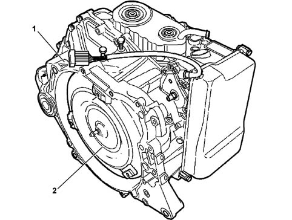
- 1, Automatic gearbox assembly
- 2, Automatic gearbox components
DESCRIPTION
The ZF 4HP20 automatic gearbox, with 4 forward speeds plus reverse, is operated completely by means of electro-hydraulic devices.
This type of gearbox has been designed to be fitted on front wheel drive vehicles with transversely mounted engines and has an electronic management system connected, via the CAN line, to the engine management and ABS electronic control units.
A management programme, in the electronic control unit, makes it possible to use the gearbox both fully automatically and manually (sequential).
Identification
The automatic gearbox is identified by a plate (1) rivetted to the casing that contains the serial number (A), the ZF code (B), the component reference (C) and the type of gearbox (D).
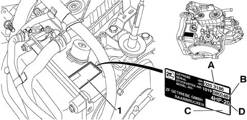
- 1, Plate
- A, serial number;
- B, ZF code (the last 3 digits);
- C, component reference;
- D, type of automatic transmission.
VIEW OF ASSEMBLY
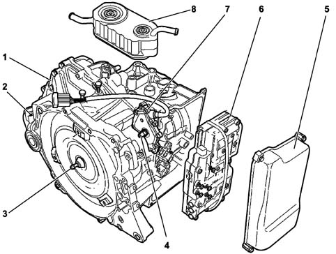
- 1, Gearbox casing
- 2, Oil filler plug
- 3, Torque converter
- 4, Gear selector shaft
- 5, Electro-hydraulic unit cover
- 6, Electrohydraulic unit
- 7, Position sensor
- 8, Heat exchanger
AUTOMATIC TRANSMISSION ASSEMBLY INTRODUCTION
The ZF 4HP20 gearbox is fully automatic and electro-hydraulically operated with 4 forward speeds plus reverse.
It is equipped with an electronic control system connected, via a CAN line, to the engine management control unit and the ABS control unit.
The automatic transmission electronic control system logic is contained in an electronic control unit that manages:
- the torque converter,
- the gear changes,
- the specific programmes.
The control system makes it possible to use the gearbox either fully automatically or sequentially manually.
The management is self-adaptive, i.e. capable of adjusting to the driving style of the driver.
This makes it possible to transmit power continuously, with very rapid gear engagement times (electro-hydraulic).
The electronic control unit is connected:
- to the various sensors and actuators,
- to the engine management ECU,
- to the ABS control unit,
- to the selector lever.
This information is processed and sent to the instrument panel/display to show the various operating conditions.
CONSTRUCTION SPECIFICATIONS
The gearbox is equipped with a hydrodynamic torque converter with an anti-slip device that makes it possible to produce reduction gear ratios.
This gearbox has the special feature of operating without a free wheel because the gear shift takes place by means of overlapping the couplings in order to allow:
- increased compactness and a reduction in weight,
- improved output due to the reduction in friction losses,
- lower torque points on the components and on the kinematic chain.
- Cross section of gearbox-differential unit
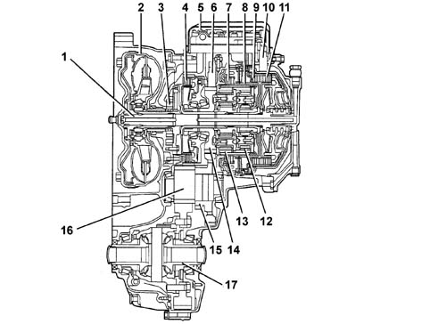
- 1, Input shaft
- 2, Torque converter
- 3, Oil pump
- 4, Brake F
- 5, Electrohydraulic unit
- 6, Gearbox output rpm sensor
- 7, Brake d
- 8, Brake C
- 9, Clutch B
- 10, Gearbox input rpm sensor
- 11, Clutch E
- 12, Second epicyclic satellite gears
- 13, First epicyclic satellite gears
- 14, Centre cylindrical gear
- 15, Gear for parking lock
- 16, Intermediate shaft
- 17, Differential
OPERATION
The electronic management of the gearbox makes it possible to produce gear changes that are suited to the temporary specifications of the engine with a certain degree of flexibility.
The control unit has the task of:
- adjusting the oil pressure to the engine torque for the gear change,
- implementing the safety functions,
- defining the gear change programme,
- carrying out the system fault diagnosis.
- The following signals are used by the control unit for managing these operating logics:
- engine rpm (via the engine management control unit),
- throttle position (via the engine management control unit),
- engine temperature (via the engine management control unit);
- converter turbine number of revs
- gearbox output number of revs
- vehicle speed (A.B.S.),
- transmission fluid temperature,
- gear selector lever position,
- accelerator pedal position (kick-down, via the engine management control unit)
- brake pedal position (A.B.S.).
- Diagram showing information entering/leaving the control unit
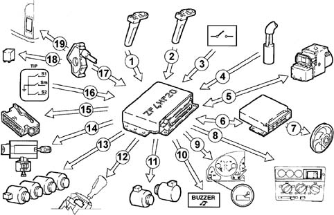
- 1, Gearbox shaft input rpm sensor
- 2, Gearbox output rpm sensor
- 3, Driver's door switch
- 4, Gearbox oil temperature sensor
- 5, ABS control unit/CAN line
- 6, Engine management control unit/CAN line
- 7, Water/oil cooling fan
- 8, Display
- 9, Control panel
- 10, Buzzer control
- 11, Solenoid valves MV1 - MV2
- 12, Lever in P release control (shift-lock)
- 13, Pressure regulators REG1 - REG2 - REG3 - REG4
- 14, Ignition key extraction release control (key-lock)
- 15, Diagnostic socket
- 16, Switch on gear lever recognizing automatic/manual management
- 17, Selector lever position sensor (P - R - N - D)
- 18, Starting enablement
- 19, Reversing lights control
Gear shift program
The winter programme can be selected, in poor grip conditions, using the special button.
Through this programme the control unit ensures that the vehicle sets off in second gear and later on it manages the engagement of the gears using a special map.
The electronic control unit also contains the following programmes:
Manual operation (tip)
The Tip function makes it possible to use the gearbox manually.
Moving the gear selector:
- forwards (+) produces an increase in the gear (shift-up);
- backwards (-) produces a downwards gear change (shift-down).
Each time the gear control lever is moved only one gear change is carried out: commands are not cumulative.
The control unit inhibits a gear change if the gearbox output shaft rpm, measured by the gearbox output rpm inductive sensor, is not within the levels set by the programme to prevent the engine going beyond or below the permitted revs.
Warm-up programme (wml)
This is a programme derived from a special configuration of the SKT programme that contributes in helping the engine reach operating temperature quickly adapting the gear change points according to the temperature of the engine.
It is activated, after starting, if the temperature of the engine coolant is below 30°C and remains activated up to 34°C.
High transmission fluid temperature safety programme (skt)
This programme is activated when the temperature of the transmission fluid reaches 120°C and remains activated up to 117°C.
The control unit implements the following strategies to facilitate the cooling of the transmission fluid:
- it activates the lock-up clutch to reduce the Jaule effect in the converter,
- it sends information on the oil temperature to the engine management control unit, via the CAN line, to manage the cooling fan.
Safety functions
The gearbox electronic control unit implements and manages the safety functions described below.
Inhibition of the gear change when cornering
The control unit inhibits a change to a higher gear (shift-up) in the case of strong transverse acceleartion, for example, when cornering, with the accelerator pedal released very rapidly. The system enters the "engine lock" mode maintaining the last ratio selected. When the critical conditions are over, the automatic programme is automatically restored.
This strategy allows:
- improved vehicle stability,
- responsive acceleration when coming out of a bend because the vehicle is in the ideal gear.
Change to a lower gear (shift-down) whilst braking
In the case of emergency or quick braking, the control unit selects the lowest possible gear to produce the maximum engine braking effect.
The automatic downshift depends on:
- type of braking,
- gradient of the road,
- type of driving (degree of sportiness)
Shift-lock
A safety system locks the gear selector in position P until, with the ignition ON, the brake pedal is pressed at the same time as the enablement button, on the gear lever grip.
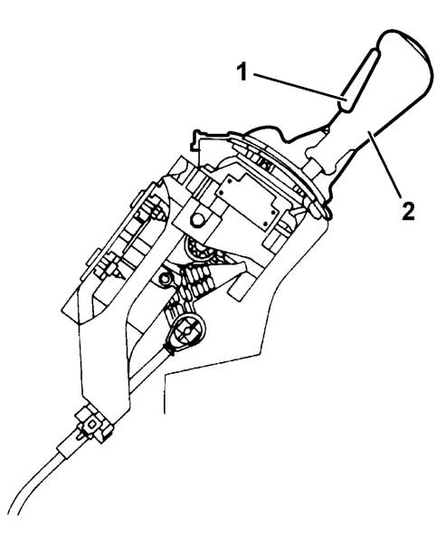
- 1, Gear control lever
- 2, Enablement button
Key-lock
The key can only be extracted from the ignition switch with the selector lever in position P and a within 25 seconds of the key-off.
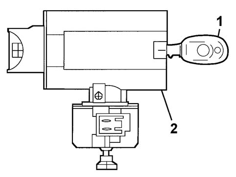
- 1, Ignition key
- 2, Ignition switch
Buzzer
A special buzzer warns the driver:
- for maximum period of 15 seconds if the gear selector lever is in a position other than P when driver's door is opened;
- when the engine is operating beyond the correct revs with the gearbox in a manual position;
- when reverse gear is engaged with the doors closed for a period of 4 seconds.
Beyond revs
This function avoids damage to the engine through too high a rotation speed.
The Automatic Transmission electronic control unit sets a higher gear before the speed becomes too high or it prevents (delays) the shift to a lower gear to avoid a similar risky situation.
Start-up
The engine can only be started up with the selector lever in position "N" or "P".
Reverse gear
Reverse gear cannot be engaged, with the selector lever in position "R", if the vehicle speed is above a certain level (8 km/h).
When the speed goes below the set level, reverse gear is engaged and remains engaged even if the speed later exceeds the set level.
The reversing lights come on and the buzzer is activated with the lever in position "R".
Gearbox failure warning light
A single warning light in the control panel signals:
- transmission fluid overheating with the warning light on constantly (on when the fluid temperature is >140°C and off with the fluid temperature <137°C);
- automatic transmission failure with the warning light flashing (on for 4 seconds and then flashing);
- system working efficiently (on for 4 seconds at the key-on and then off).
Parking
It is only possible engage the selector lever in position "P" with the vehicle stationary or the speed of the vehicle below a certain level (4 - 6 km/h).
A shift-lock system locks the gear lever when it is in position "P" until the brake pedal and the button on the gear lever are pressed with the ignition ON.
AUTOMATIC TRANSMISSION COMPONENTS INTRODUCTION
- View of main gearbox components
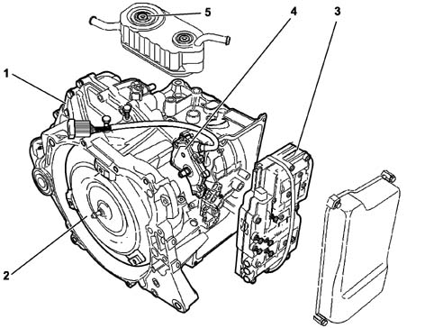
- 1, Gearbox casing
- 2, Torque converter
- 3, Electrohydraulic unit
- 4, Position sensor
- 5, Heat exchanger
DESCRIPTION
Torque converter
It is fitted between the engine and the gearbox in place of the conventional disc clutch.
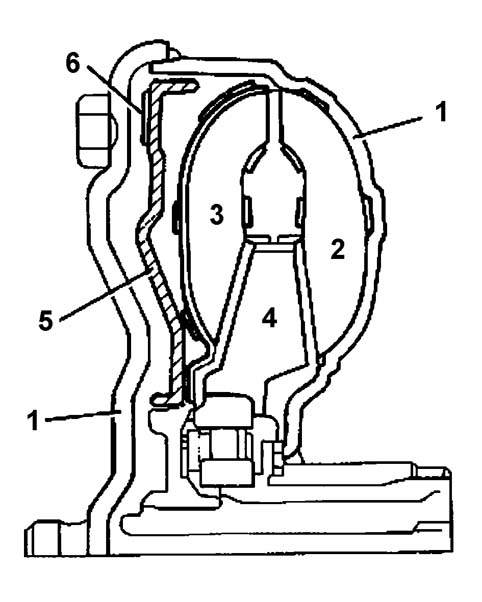
- The torque converter consists of:
- 1, a casing containing the oil and various components;
- 2, a pump impeller connected to the crankshaft and to the oil pump;
- 3, a turbine impeller connected to the gearbox input shaft;
- 4, a stator, fitted on the free wheel, with the task of directing the flow of oil towards the pump impeller;
- 5, a lock-up device;
- 6, friction gasket.
The hydro-dynamic torque converter has the function of ensuring a (hydraulic) connection between the engine and the gearbox with the advantage of even torque transmission without jerking.
Where appropriate, a torque converter locking device (lock-up), operated by the control unit by means of a solenoid valve (MV2) and a regulation solenoid valve (REG3) mechanically connects the gearbox to the engine flywheel excluding the hydro-dynamic function.
The operation of the converter takes place in the following stages:
- converter stage, where the torque is multiplied,
- coupling stage, where the torque is transmitted 98% to 100% depending on whether the lock-up is activated or not.
Operation
As soon as the engine is started the pump impeller (1) behaves like a centrifugal pump and the oil is thrust by centrifugal force into the radial ducts.
The oil that comes out of the pump impeller vanes is directed to the turbine impeller (2) where it flows through the ducts from the outside towards the centre.
In these circumstances, if the oil flows directly onto the pump impeller, it comes into contact with the vanes in the opposite direction to its direction of rotation.
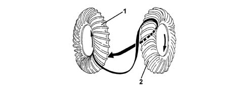
- 1, Pump impeller
- 2, Turbine impeller
To avoid this, there is a stator (3) between the two impellers.
The stator is designed to divert the flow of oil to the pump impeller (1) in the same direction of rotation.
In this way the energy from the oil directed to the pump impeller inlet is added to the kinetic energy of the impeller at that time.
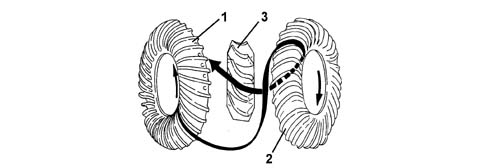
- 1, Pump impeller
- 2, Turbine impeller
- 3, Stator
The greater the difference in speed between the pump impeller (1) and the turbine, the greater the multiplication of the torque (max. with turbine stationary).
When the turbine impeller starts to pick up speed the multiplication of the torque gradually decreases.
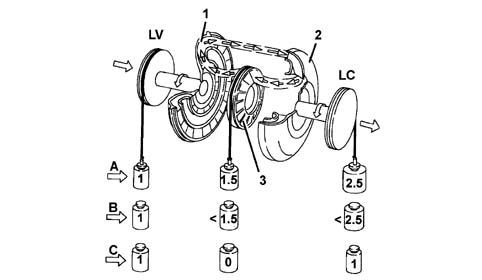
- A, During starting
- B, Intermediate speed
- C, Coupling stage
- 1, Pump impeller
- 2, Turbine impeller
- 3, Stator
- LV, Engine flywheel side
- LC, Gearbox/differential side
Lock-up clutch
This function checks or locks the sliding between the pump impeller and the turbine impeller.
If the oil were the only element transferring torque, there would always be a difference in the number or revs between the pump impeller and the turbine impeller known as "sliding".
To prevent this condition the torque converter is fitted with a lock-up device, managed by the control unit by means of a regulation solenoid valve (REG3) and a solenoid valve (MV2) which, by reversing the flow of the oil in the converter, activates the lock-up device.
There are three operating states for the device:
- open state (see the paragraph on the operation of the torque converter, described previously);
- closed state in which, with all sliding between the pump impeller and the turbine impeller prevented, the torque is transmitted in its entirety from the engine to the gearbox;
The pressure of the oil thrusts the sliding device (2) towards the wall of the converter casing (1), activating the locking of the sliding between the pump impeller (4) and the turbine impeller (3) through the effect of a fricition gasket (5).
- Lock up device in closed state
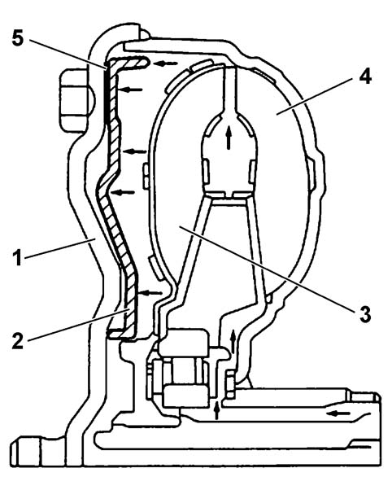
- 1, Gearbox casing
- 2, Lock-up device
- 3, Turbine impeller
- 4, Pump impeller
- 5, Friction gasket
operated state, the control unit maintains controlled sliding between the pump and the turbine.
- Lock up device in operated state
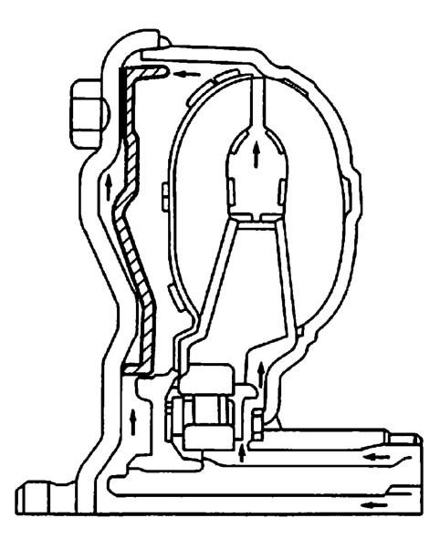
Oil pump
The oil pump, fitted between the torque converter and the gearbox casing, if the geared type and is operated by the converter pump impeller.
The pressurized oil controls the gear engagement and lubricates the various gears.
The pump comprises two eccentric gears:
- drive gear (6) with outside teeth,
- driven gear (7) with inside teeth.
The two gears are housed in a pump casing (3) which contains an asymmetric partition to produce two different chambers: an intake chamber (1) and a supply chamber (2).
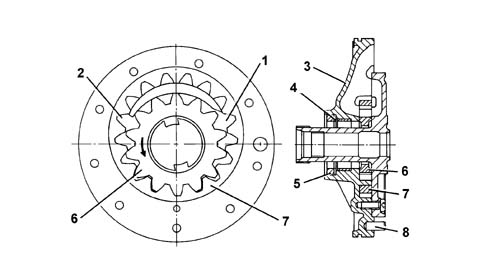
- 1, Intake chamber
- 2 - Drainage chamber
- 3, Pump casing
- 4, Washer
- 5, Gasket
- 6, Drive gear (operated by the torque converter pump impeller)
- 7, Driven gear
- 8, Centering pin
Clutches
There are two oil-bath multiple disc clutches in the gearbox alternately comprising:
- driven discs (2) covered in high friction coefficient material,
- steel drive discs (1).
The coupling between the drive and driven discs takes place by means of a hydraulically operated piston (3).
The release takes place by means of a release disc spring (4).
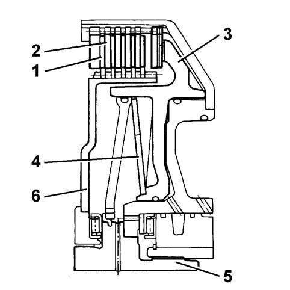
- 1, Drive discs
- 2, Driven discs
- 3, Piston
- 4, Release spring
- 5, Input shaft
- 6, Disc carrier plate
Brakes
There are three oil bath multiple disc type braking units in the gearbox.
Their operation is basically the same as that of the clutches.
The only difference is that the drive discs do not transmit torque to the driven discs because the latter form one piece with the gearbox casing.
The effect is of braking the rotation of the drive discs and consequently the gear involved.
Epicylic gear train
It comprises two simple epicyclic units fitted directly one behind the other and meshed.
Each epicyclic unit is composed of:
- first epicyclic satellite gears (1),
- first epicyclic satellite gear carrier (2),
- first epicyclic pinion (3),
- first epicyclic ring gear (4),
- reduction pinion (5),
- second epicyclic satellite gears (6),
- second epicyclic satellite carrier (7),
- second epicyclic pinion (8),
- second epicyclic ring gear (9),
- View of epicyclic gear train
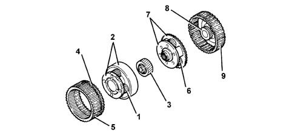
- 1, first epicyclic satellite gears
- 2, first epicyclic satellite gear carrier
- 3, first epicyclic pinion
- 4, first epicyclic ring gear
- 5, reduction pinion
- 6, second epicyclic satellite gears
- 7, second epicyclic satellite carrier
- 8, second epicyclic pinion
- 9, second epicyclic ring gear
Gearbox operating diagram
The varios transmission ratios (gears) are produced by means of the different combinations permitted by the gears making up the epicyclic gear train.
This combination is allowed by the intervention of clutch assemblies B and E, plus brake assemblies C, D, and F.
Activation of brakes/clutches depending on the gear engaged:
- R: clutch B and brake D activated,
- 1st speed: clutch B plus brake F activated,
- 2nd speed: clutch E plus brake F activated,
- 3rd speed: clutches E and B activated,
- 4th speed: clutch E plus brake C activated.
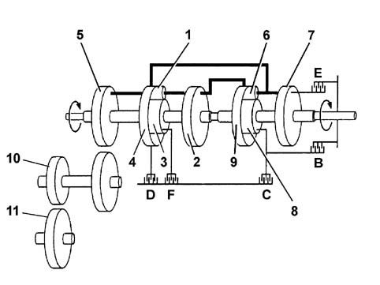
- 1, first epicyclic satellite gears
- 2, first epicyclic satellite gear carrier
- 3, first epicyclic pinion
- 4, first epicyclic ring gear
- 5, reduction pinion
- 6, second epicyclic satellite gears
- 7, second epicyclic satellite carrier
- 8, second epicyclic pinion
- 9, second epicyclic ring gear
- 10, Intermediate shaft
- 11, Differential
Intermediate shaft with parking lock
The intermediate shaft (1) is fitted on bearings and is designed to transfer power from the epicyclic gear train to the differential (2).
With the gear selector lever in position P, a straight-toothed wheel (3), positioned between the two intermediate shaft gears, makes it possible to immobilize the actual shaft through a locking device.
It is impossible to engage the locking device in park accidentally when the vehicle is travelling at high speed (above 4 - 6 km/h) because the device (4) slides on teeth on the wheel (3).
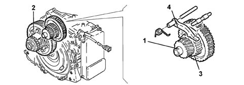
- 1, Intermediate shaft
- 2, Differential
- 3, Toothed locking wheel
- 4, Locking device
Gear selector lever
The gear selector lever can bel placed in the following positions:
- P, park,
- R, reverse,
- N, neutral,
- D, drive (completely automatic gear change).
The information concerning the position of the gear lever (P - R - N - D) is supplied to the gearbox electronic control unit by a sensor fitted on the gearbox casing by the selector lever.
The control unit sends a signal to the display in the instrument panel, by means of a dedicated serial line, to show the corresponding position of the lever and the management mode (automatic/manual).
It is possible to move from position D to the manual management of the gear change by moving the lever to the left. At the first movement (+) or (-), the system moves to manual gear change management.
The winter programme can be selected, in poor grip conditions, using the special button (W). The control unit uses this programme to ensure that the vehicle sets off in second gear and that afterwards the gear change management is carried out in accordance with a special map.
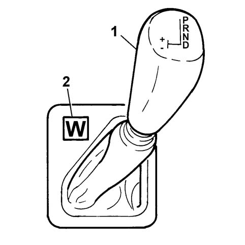
- 1, Gear control lever
- 2, Winter programme button
Selector lever position sensor
The selector lever position sensor is fitted on the gear selector shaft which is connected to the selector control lever by means of a cable.
The position of the selector lever (P - R - N - D) is transmitted by the sensor to the control unit in a coded format via four lines; this code makes it possible to detect any malfunctions in the connections. In addition, the selector lever position sensor controls the ignition lock, the reversing lights and the gear position indicator in the instrument panel.
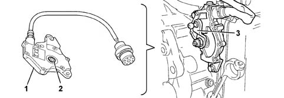
- 1, Selector lever position sensor
- 2, Seat matched with gear selector shaft
- 3, Gear selector lever
Gearbox shaft input rpm sensor
This is an inductive sensor located near the electro-hydraulic unit opposite the references with the input shaft cover.
The signal for this sensor is used by the electronic control unit to know the gearbox angular input speed.
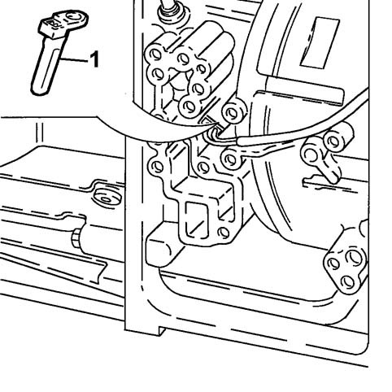
- 1, Gearbox input shaft rpm sensor
Gearbox output rpm sensor
This is an inductive sensor located behind the electro-hydraulic unit opposite the reduction pinion ring gear teeth.
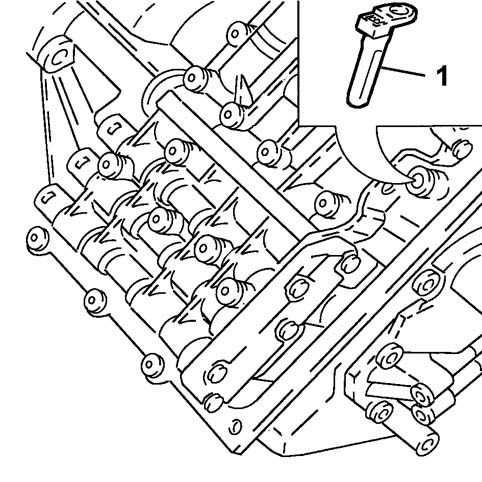
- 1, Gearbox output shaft rpm sensor
Electrohydraulic unit
The electro-hydraulic unit, located on the outside of the gearbox casing and protected by a steel cover, regulates and distributes the pressure of the oil to the brake assemblies and the clutch assemblies to implement the engagement of the ratio requested.
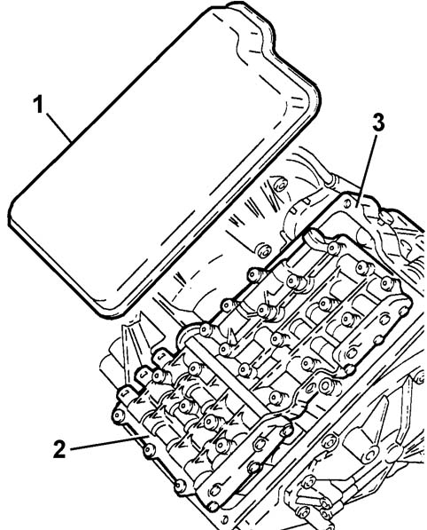
- 1, Cover
- 2, Electrohydraulic unit
- 3, Gearbox casing
Identification
The hydraulic lock is identified by a code stamped on it containing the manufacture date (E) and the description ZF (F).
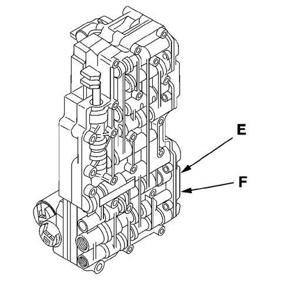
- E, Manufacture date stamp
- F, ZF description stamp
Composition
The electro-hydraulic unit consists of a plate which, in addition to a series of valves, houses:
- two solenoid valves MV1 and MV2;
- four regulators REG3, REG4, REG5 and REG6.
The solenoid valves and the regulators are operated by the electronic control unit in accordance with the special operating logics stored in the memory.
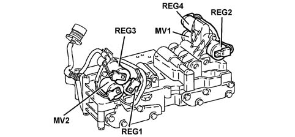
Electronic automatic transmission system control unit
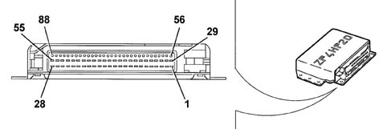
- Pin Out
- 1. Pressure regulator REG
- 2. Not connected
- 3. Not connected
- 4. Pressure regulator REG4
- 5. Pressure regulator REG1
- 6. Power earth
- 7. Not connected
- 8. Lever position selector (L2)
- 9. Lever position selector (L4)
- 10. Not connected
- 11. Not connected
- 12. Not connected
- 13. Not connected
- 14. Vehicle speed sensor (-)
- 15. Vehicle speed sensor cable screening
- 16. Gearbox input speed sensor (+)
- 17. Not connected
- 18. Not connected
- 19. Driver's door switch
- 20. Not connected
- 21. Oil temperature sensor earth
- 22. Oil temperature sensor (+)
- 23. Gearbox input rpm sensor cable screening
- 24. Not connected
- 25. Not connected
- 26. Ignition-operated positive (ON)
- 27. Vehicle speed signal
- 28. Electronic earth
- 29. Pressure regulator REG3
- 30. Solenoid valve MV1
- 31. Not connected
- 32. Not connected
- 33. Solenoid valve MV2
- 34. Power earth
- 35. Not connected
- 36. Lever position selector (L1)
- 37.Lever position selector (L3)
- 38. Not connected
- 39. Not connected
- 40. Not connected
- 41. Not connected
- 42. Vehicle speed sensor (+)
- 43. Not connected
- 44. Gearbox input speed sensor (-)
- 45. Not connected
- 46. Not connected
- 47. Not connected
- 48. Not connected
- 49. Not connected
- 50. Not connected
- 51. Not connected
- 52. MV solenoid valve power supply
- 53. REG pressure regulators power supply
- 54. Battery positive
- 55. Battery positive
- from 56 to 81. Not connected
- 82. CAN line (low)
- 83. CAN line (high)
- 84. CAN line screening
- 85. CAN line (low)
- 86. CAN line (high)
- 87. Not connected
- 88. Diagnostic line K
Transmission fluid temperature sensor
This is a PTC sensor (Positive Temperature Coefficient) located on the electro-hydraulic unit and incorporated in the electrical wiring.
The signal from this sensor is used by the control unit to manage the "SKT transmission fluid high temperature safety" programme.
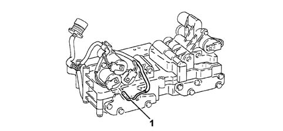
- 1, Oil temperature sensor
Gearbox water/oil heat exchanger
The gearbox water/oil heat exchanger is located on the top of the gearbox casing.
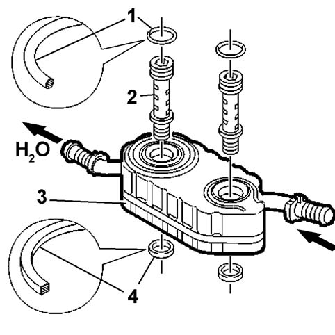
- 1, Gasket
- 2, Retaining pins
- 3, Heat exchanger
- 4, Gasket
The gearbox oil/water heat exchanger is connected, by mens of flexible pipes, to the engine cooling circuit.
Two machined fastening pins, allow the circulation of the fluid in the special chambers inside the heat exchanger. The pins are fitted with seals which, depending on their position, are different shapes.
The flow of engine coolant, in contact with the outer walls of the oil circulation chambers, lowers the temperature of the fluid.